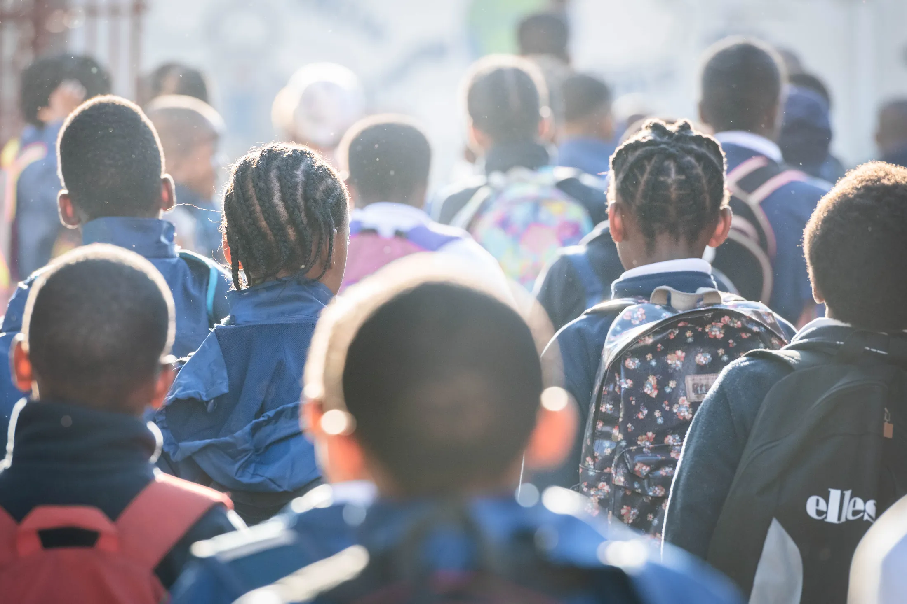

Our Story
Two Decades of Partnership
Even Ground was founded in 2003 by a passionate group of students from the US and South Africa who recognized the transformative potential within South African communities. Initially founded to help address the educational, health, and social needs of children and families affected by HIV, the organization has expanded significantly over the last two decades to focus on education, health and nutrition, and youth development. The board members and project partners have grown and flourished, fostering valuable connections that continue to uphold the organization's initial vision and mission.
Beginning in 2024, Even Ground is intensifying its commitment to providing increasing funding and capacity-building support to select community-based nonprofit organizations in South Africa and beyond. With unwavering dedication from the founding members and the infusion of energy from new members, our collective commitment to connecting changemakers across oceans is the driving force propelling the organization to greater horizons today.
Read Our Impact Stories